Artista visual oriundo de Billinghurst, General San Martín, Provincia de Buenos Aires. Actualmente se encuentra finalizando la Licenciatura en Artes Visuales en la Universidad Nacional de las Artes (UNA). Su formación combina el ámbito académico con talleres de producción y práctica sostenida en el territorio, donde la observación cotidiana y las escenas del conurbano bonaerense se configuran como núcleo central de su obra.
Se formó en el taller de pintura de Julián Caprara (2021–2024), en un taller de dibujo con Diego Parés en la Escuela OLA (2018) y previamente en el taller de dibujo con Santiago Dufour en la Escuela de Carlos Garaycochea (2017). Su producción se desarrolla principalmente en pintura, donde explora situaciones comunes, vínculos, modos de habitar y una poética de lo barrial que combina naturalismo, extrañamiento y cierta deriva surreal.
Ha participado en diversas exposiciones y salones, entre los cuales se destacan:
Obtuvo el Premio Instituto Cultural en el Salón Provincial de Arte Joven (2023) por la obra Tarde en el rioba.
 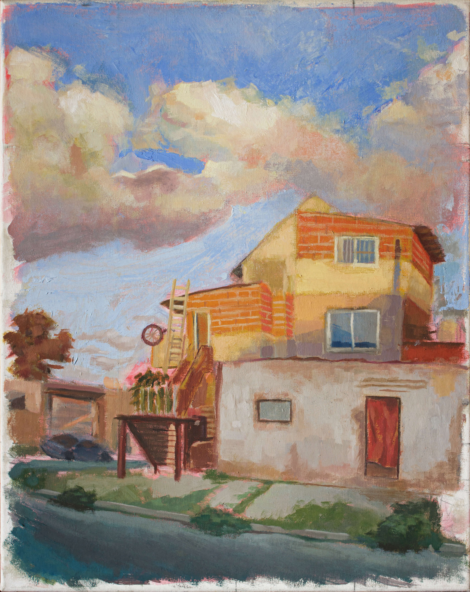
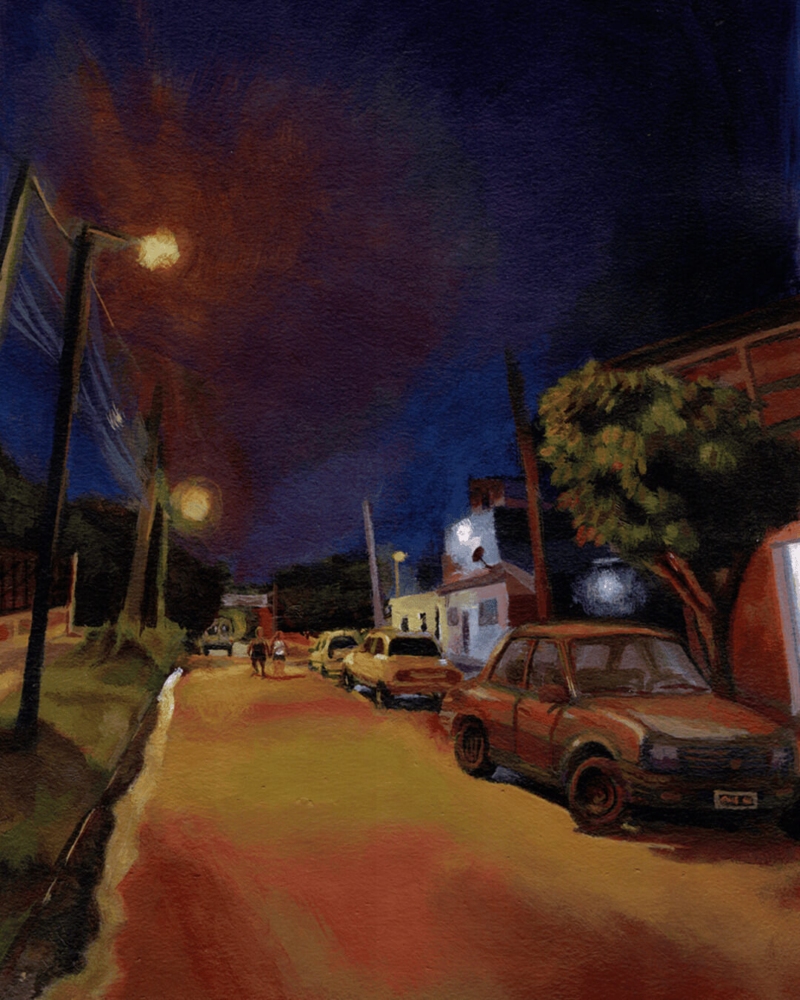
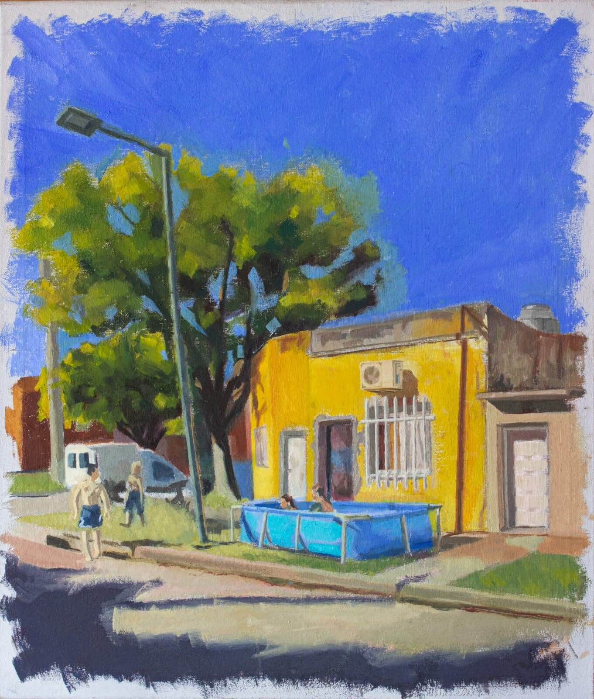
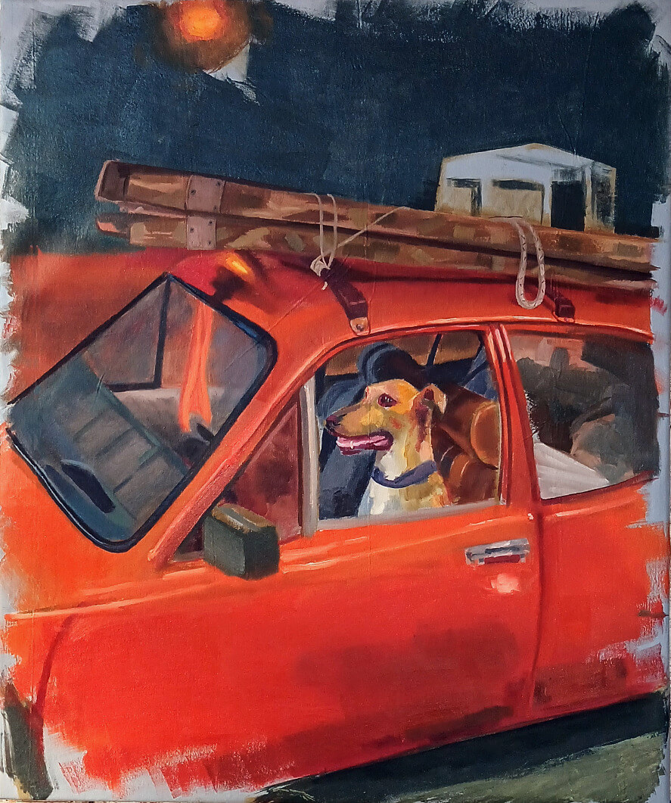
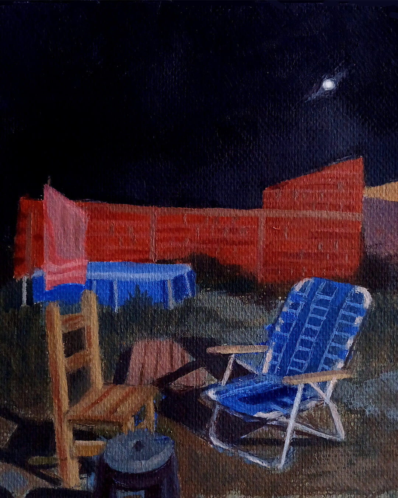
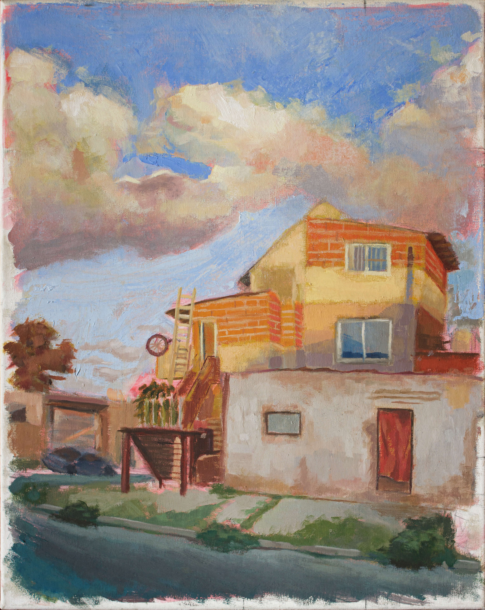
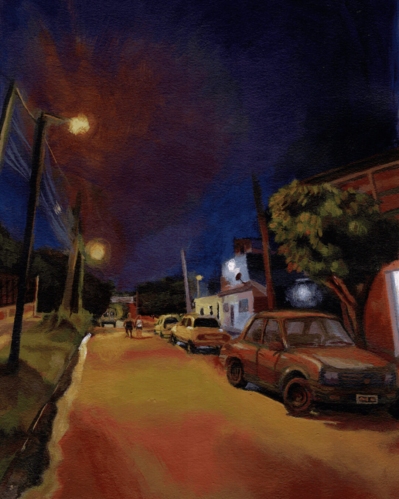
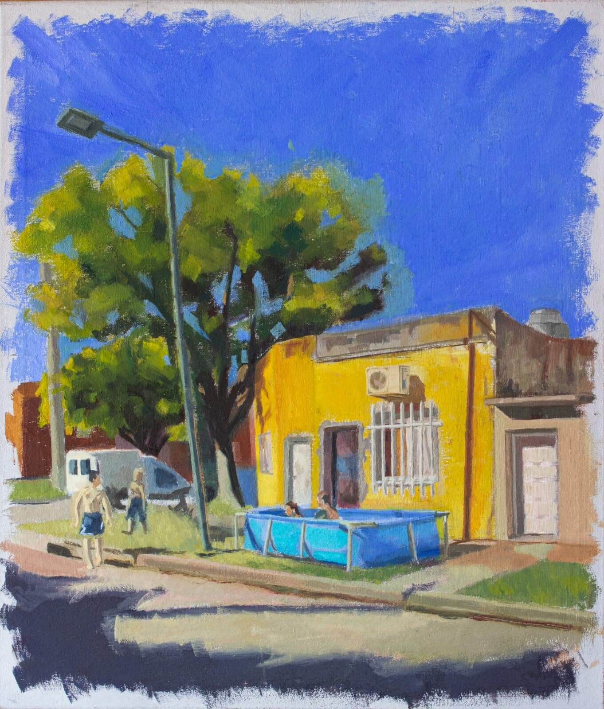
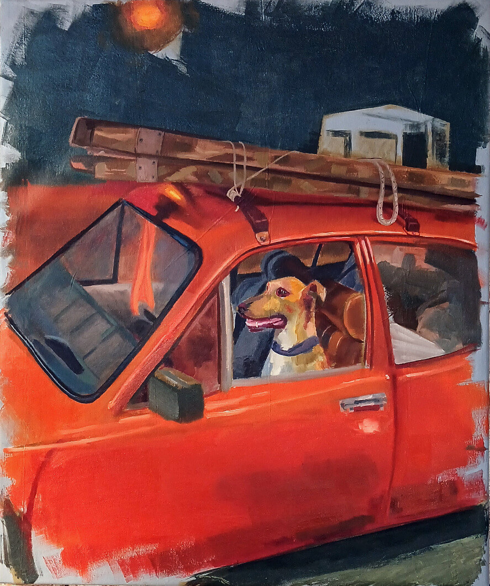
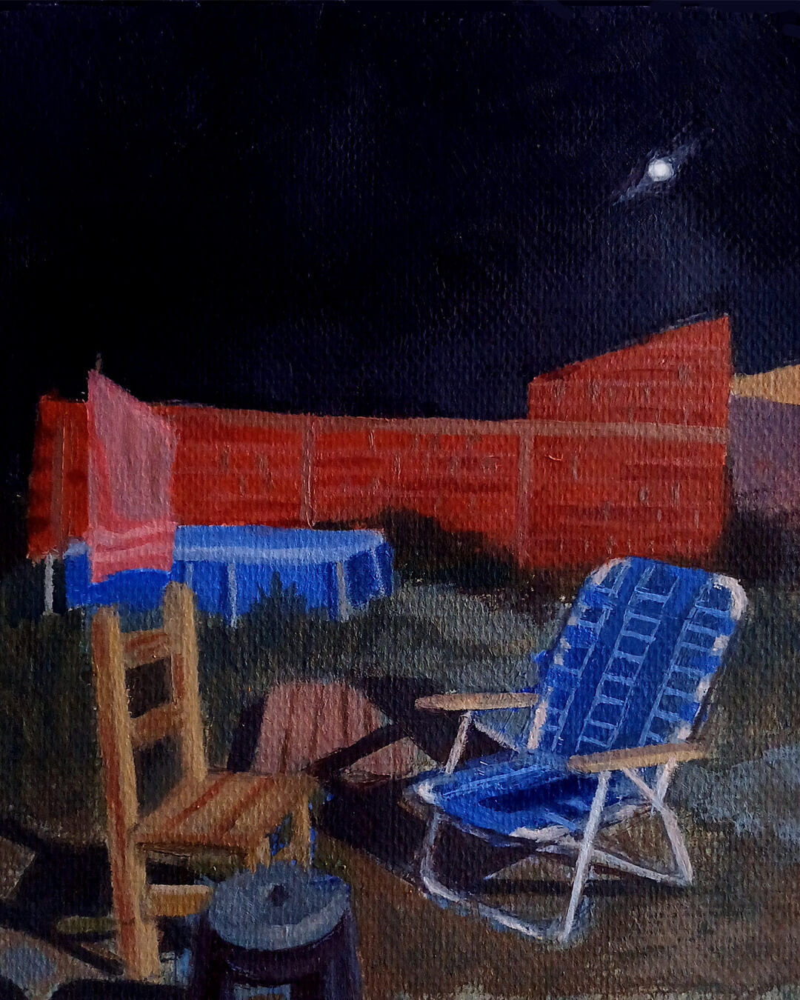
 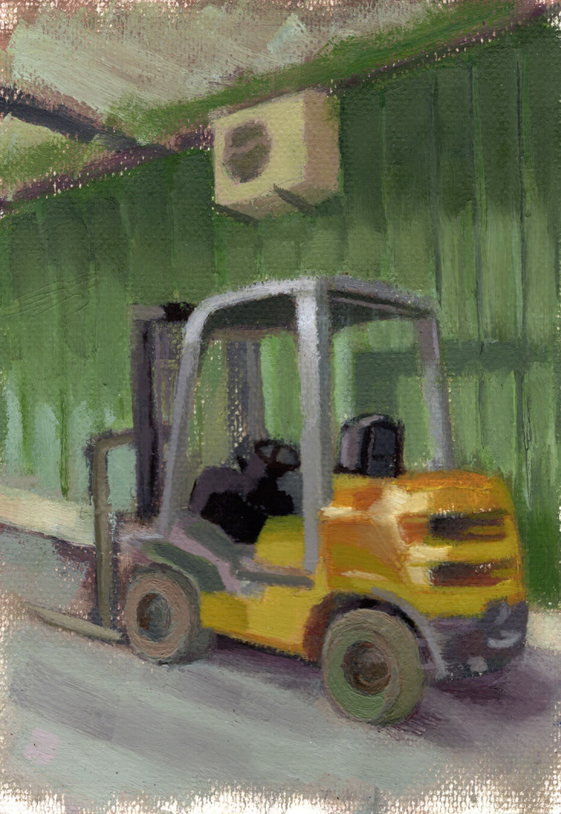
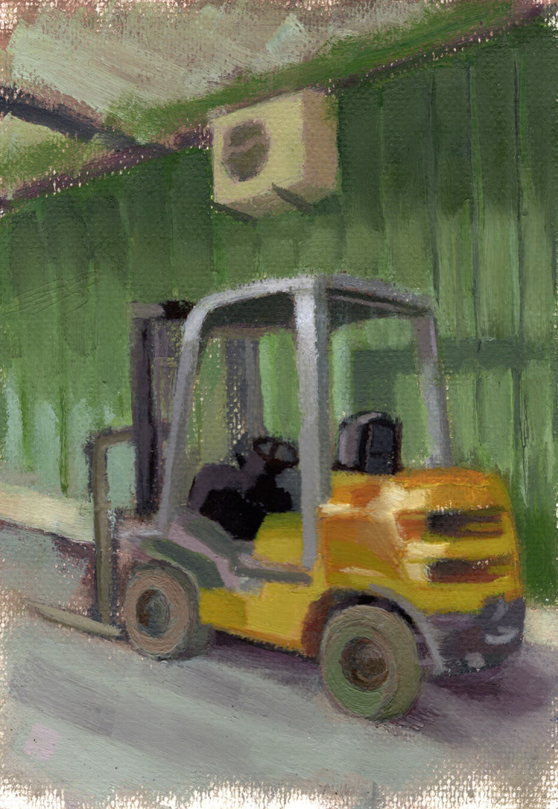


En mi obra exploro las relaciones entre personas, objetos y espacios que configuran mi cotididianeidad en el conurbano. Paisajes y situaciones frecuentes que me permiten mostrar una identidad cultural de la cual formo parte, y sobre la que quiero testimoniar.
Me sitúo como pintor que retoma algunas ideas de la pintura de fines del siglo XX, donde la mirada se posa sobre las características de una época y de un lugar, como en la pintura de Fader, donde se quiere incorporar al campo del arte la vida social que se desarrolla en ciertas comunidades.
Trabajo con la fotografía, con mi dispositivo celular o cualquier otro al alcance. Puedo captar cosas que me asaltan a cada momento: un paisaje, una situación en la calle, cosas con las que me tropiezo sin estar buscándolas. La pintura me da la posibilidad de alentar la relación que tengo con esa imagen captada en la inmediatez.
Mientras pinto, la reflexión sobre la escena se vuelve más profunda, cargándose con mi tiempo, con el tiempo de la pintura, con la materia y la tradición de la misma. La temática entonces de la imagen empieza a transformarse y tomar rumbos insospechados al momento de la captura fotográfica. Lo visible y lo invisible de aquello que constituye una identidad se abre paso durante el proceso de pintar.
De este modo, mi obra se transforma en un espacio de conversación abierto, que se inicia conmigo y la imagen inicial, y luego entre la obra y el espectador, que proyecta sus propios significados y formas de ver la realidad.